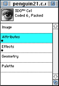
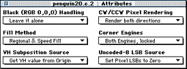

This section discusses how to edit the attributes of a 3DO cel using the
Attributes editor from the Window dialog. The Attributes editor lets you
set certain Cel Control Block (CCB) flags for a cel. The Attributes are
discussed in detail in 3DO PostPro
Reference.
To display the attributes dialog and edit its options, follow these
steps:
Launch 3DO PostPro.
From the File menu, choose Open; then select the cel you want to work
with from the Open dialog. The Document window appears (see Figure 1).

Figure 1: Document window for an opened file.
Drag the Document Proxy onto the Workbench to view the file.
Double-click on the Attributes category listing in the Document
window. The Attributes editor appear (see Figure 2).

Figure 2: Attributes editor.
Change the attributes using the options on the pulldown menus. As you make changes, you can view the effects immediately on the
Workbench and on the television display monitor.
When you are satisfied
with your changes, save the file. Choose Save to save under the same name as the
original cel, or Save As to save it under a new name.